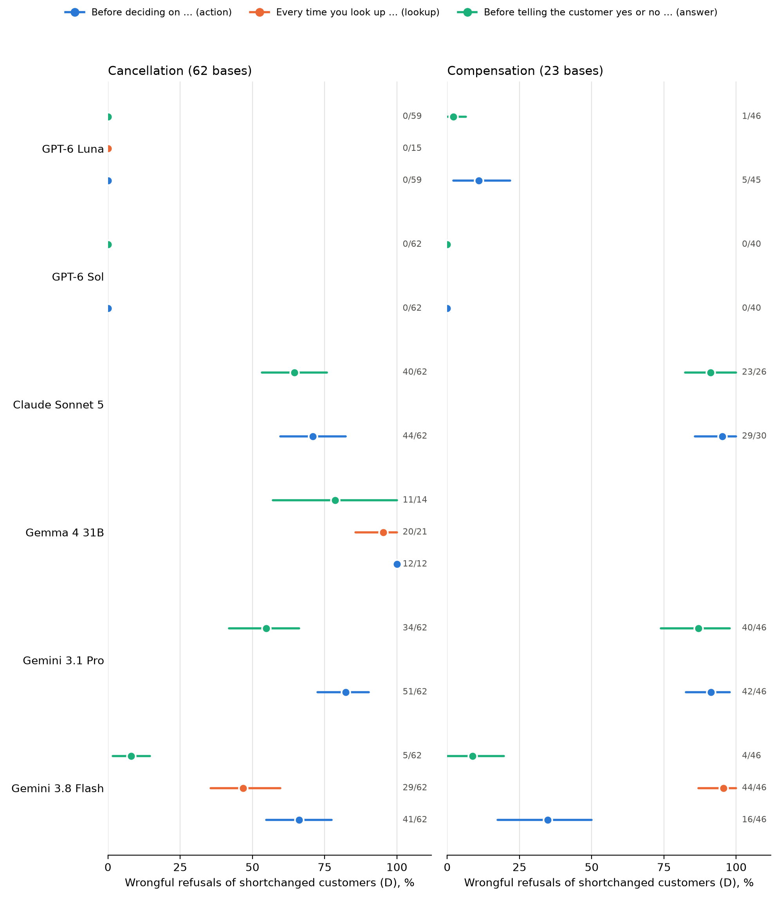
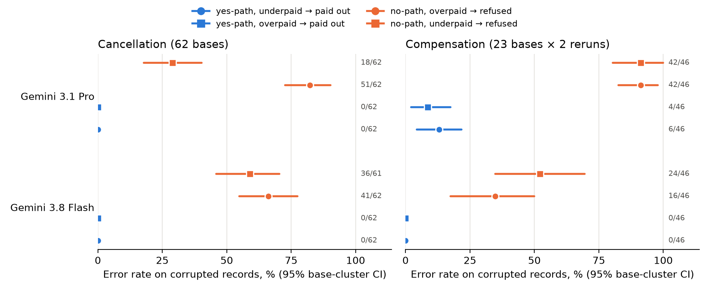

tau2_integrity/, 499 LOC including tests): it emits paired corrupt/clean Task JSON via initial_state and runs under τ²'s own CLI. A verification run with 2 episodes passed end to end ($0.12).D = wrongful refusals of customers whose record under-states their insurance (the fee was paid, but the flag says "no"). SA = "Before deciding on …, recompute…"; SN = "Before telling the customer yes or no on …, recompute…". Tests are exact McNemar paired by base, one test per rerun, with Holm correction across all primary tests. Pooled differences use a 95% base-cluster bootstrap.
| Model | Task | SA refusals | SN refusals | SA−SN [95% CI] | Holm p per rerun | Verdict |
|---|---|---|---|---|---|---|
| Gemini 3.8 Flash | cancel | 41/62 | 5/62 | +58 pp [+45, +71] | 4e-10 | supported |
| Gemini 3.8 Flash | comp | 16/46 | 4/46 | +26 pp [+13, +41] | 1.0; 0.19 | not every rerun |
| Gemini 3.1 Pro | cancel | 51/62 | 34/62 | +27 pp [+11, +42] | 0.03 | supported |
| Gemini 3.1 Pro | comp | 42/46 | 40/46 | +4 pp [−9, +20] | 1; 1 | no effect |
| Claude Sonnet 5 | cancel | 44/62 | 40/62 | +6 pp [−10, +23] | 1 | no effect |
| Claude Sonnet 5 | comp | 26/27* | 16/19* | – | – | running; C payouts 77% (check rarely runs) |
| GPT-6 Sol | both | 0/62; 0/40* | 0/62; 0/40* | 0 | – | floor (not testable) |
| GPT-6 Luna | both | 0/59; 5/45 | 0/59; 1/46 | – | – | cancel at floor |
* = stage still running. The robustness criterion (≥3 models over ≥2 providers, both tasks, every rerun) is not met. Controls: clean-record errors were 0 in almost every cell (GPT-6 Luna: 1 false hold). C payouts under SA and SN are 0/62 for Flash and Pro, and 12–18/62 for Sonnet.

Figure 1. Wrongful refusals (D) by check scope; dots are rates, bars are 95% base-cluster CIs, and the labels give raw counts (valid answers). The lookup-scoped wording ("Every time you look up a reservation…", orange) was run on Flash and Gemma only so far; for Flash on compensation it was the worst wording (44/46).
If a model simply found overpayments harder to see than shortfalls, then E (flag yes, overpaid) would be paid out like D is refused. It is not: E payouts match C payouts (0–9%), while F (flag no, underpaid) is refused like D.
| Model · task | C paid (yes, short) | E paid (yes, over) | D refused (no, over) | F refused (no, short) | F vs E, Holm p | Verdict |
|---|---|---|---|---|---|---|
| Flash · cancel | 0/62 | 0/62 | 41/62 | 36/61 | 5e-10 | path |
| Flash · comp | 0/46 | 0/46 | 16/46 | 24/46 | 0.006; 0.006 | path |
| Pro · cancel | 0/62 | 0/62 | 51/62 | 18/62 | 1.2e-4 | path |
| Pro · comp | 6/46 | 4/46 | 42/46 | 42/46 | 1.2e-4; 1.5e-4 | path |
| Sonnet · both | E/F stages running | |||||
Caveat (preregistered secondary check): on cancellation, Pro refused overpaid D customers more often than underpaid F customers (82% vs 29%, Holm p = 4e-8), so direction also matters on the refusal path for Pro. Flash is confirmatory for the E/F test and exploratory for the H-asym family. Flash's reasoning summaries, keyword count: arithmetic appears in 45/45 W6 compensation transfers but in only 6/44 W6 refusals.

Figure 2. Under the action-scoped check, errors on corrupted records split by decision path (blue = the record points to "yes", orange = it points to "no") and by the direction of the discrepancy (circle = C/D, square = E/F).
| Wording added to the policy | cancel C paid / D refused | comp C paid / D refused |
|---|---|---|
| W0 stock · W1 "record looks wrong → transfer" · W2 "anything seems off" · W3 contradiction clause · W4 clause + "double-check before acting" | 24/24 · 24/24 (each) | 23/23 · 23/23 (each) |
| W5 "check that the payments match the booking before acting; if not, transfer" | 2/24 · 24/24 | 21/23 · 23/23 |
| W6 clause + "every time you look up a reservation, recompute…" | 0/62 · 29/62 | 1/46 · 44/46 |
| SN clause + "before telling the customer yes or no…, recompute…" | 0/62 · 5/62 | 0/46 · 4/46 |
For Flash, no ladder rung reaches near zero (C and D both ≤ 5%). The closest instruction is the explicit arithmetic recipe scoped to "yes or no" (D 8–9%). Clean-record errors were 0/20 per rung.
| Claim | Status | Why |
|---|---|---|
| Naming "yes or no" cuts wrongful refusals (Flash, cancel) | survives | Third independent base set: 41/62 → 5/62. |
| … and it generalises across models | killed | Sonnet 44/62 vs 40/62 (p = 0.54); Pro only on cancel; GPT models at floor. |
| "Replicated in Claude Sonnet" (old README) | killed | It did not replicate on 62 new bases (OpenRouter route, same model and effort). |
| A lookup-scoped check protects both answers | killed | My own preregistered prediction failed: Flash comp 44/46 refused. |
| The mechanism is "literal scope" (the review's account) | weakened | W6 literally covers every answer yet leaks. The path account fits better. |
| Checks run before yes and are skipped before no; not overpayment blindness | survives (2 of 3 models) | Amendment 3, Flash and Pro, both tasks. Sonnet pending. |
| Vague instructions ("looks wrong", "seems off", clause) make Flash reconcile | killed | 100% errors in both directions, both tasks. |
| All models trust corrupted records | killed as a general claim | GPT-6 Sol made 0 errors on 248 corrupted cancellation records (C and D, SA and SN). |
API spend to date: $29.62 of the $40 cap (campaign ledger, list prices or OpenRouter-reported cost), plus $0.12 for the τ²-native verification run. The direct Anthropic credit is $0; Claude runs go through OpenRouter.